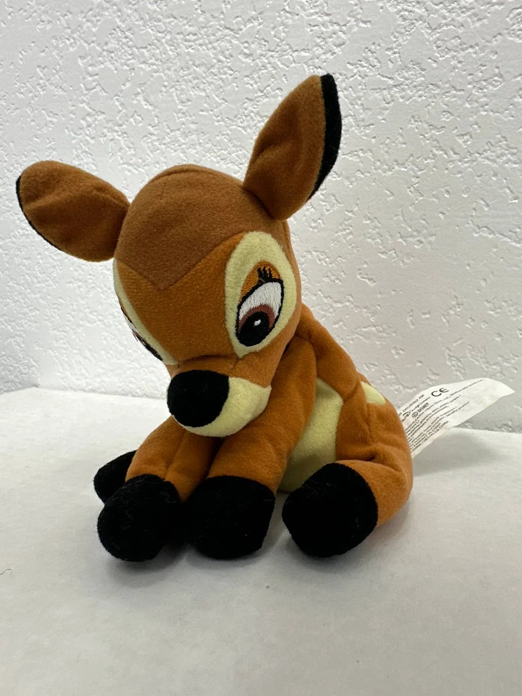
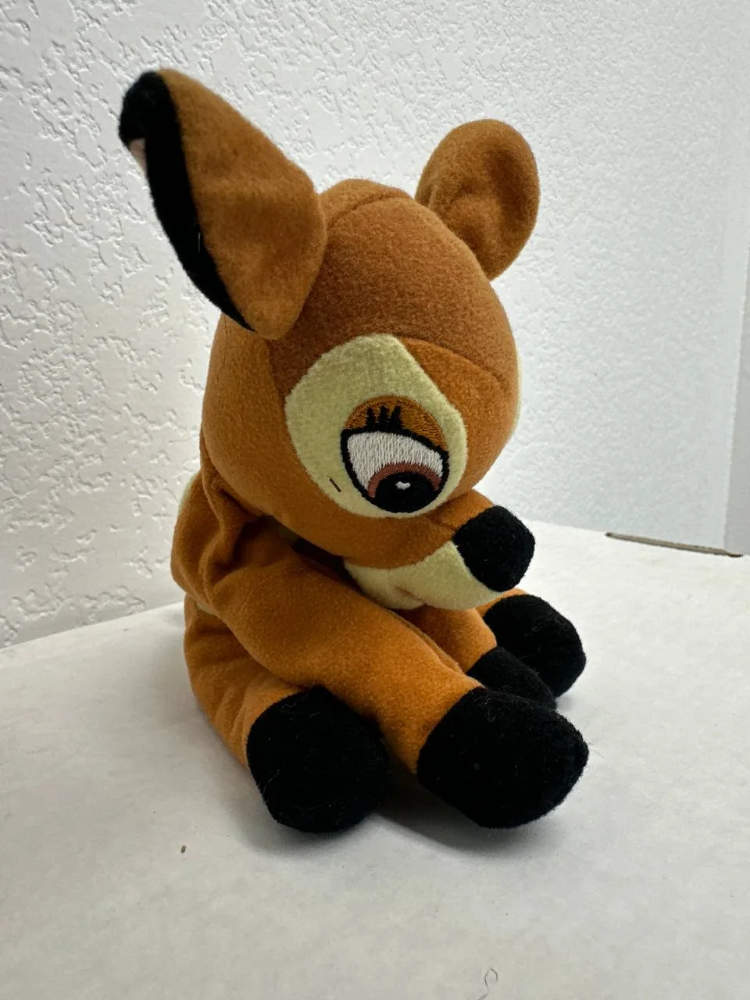
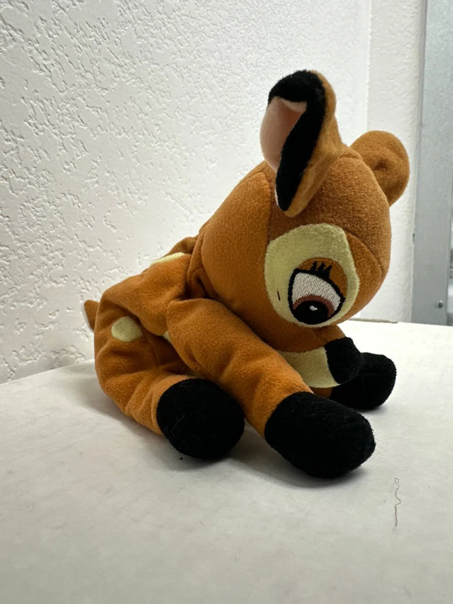
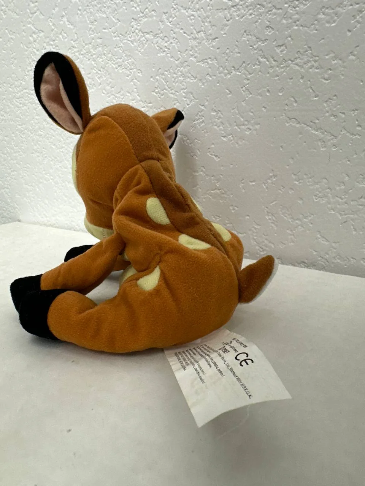

← Back to Cypress Flips




Plushie
Vintage Disney Store Bambi Mini Bean Bag Plush w/ Tag
$12.00
Website direct local pickup price — marketplace listings may be higher.
Add a classic Disney favorite to your plush collection with this vintage Disney Store Bambi Mini Bean Bag plush. Bambi is one of Disney's most recognizable characters, and this small bean bag plush captures the sweet fawn look with soft brown fabric, cream spots, black hooves, embroidered eyes, oversized ears, and the Disney Store tag still attached. It is a charming pickup for Disney collectors, Bambi fans, vintage plush collectors, or anyone building a nostalgic shelf display.
Condition: Good vintage pre-owned/display condition with tag attached. Compared with a mint-condition plush, this Bambi shows normal age and handling from storage/display. The plush may have light lint/fiber pickup, mild fabric wear, and some natural creasing/softness in the seated pose. The tag is attached and visible, with normal bending/wrinkling from age and handling. The embroidered eyes, ears, spots, hooves, and stitching appear intact from the photos. No major tears, missing pieces, or heavy staining are visible in the provided images.
Market pricing for Disney Store Bambi mini bean bag plushes varies by size, tag condition, and exact release, with comparable Bambi/Disney bean bag plush listings often appearing around the low-to-mid teens and some lots or rarer examples going higher. This one is priced at $15 to stay competitive while still reflecting the attached tag and nostalgic Disney appeal.
Condition: Good vintage pre-owned/display condition with tag attached. Compared with a mint-condition plush, this Bambi shows normal age and handling from storage/display. The plush may have light lint/fiber pickup, mild fabric wear, and some natural creasing/softness in the seated pose. The tag is attached and visible, with normal bending/wrinkling from age and handling. The embroidered eyes, ears, spots, hooves, and stitching appear intact from the photos. No major tears, missing pieces, or heavy staining are visible in the provided images.
Market pricing for Disney Store Bambi mini bean bag plushes varies by size, tag condition, and exact release, with comparable Bambi/Disney bean bag plush listings often appearing around the low-to-mid teens and some lots or rarer examples going higher. This one is priced at $15 to stay competitive while still reflecting the attached tag and nostalgic Disney appeal.
Local pickup available in Cypress, CA.